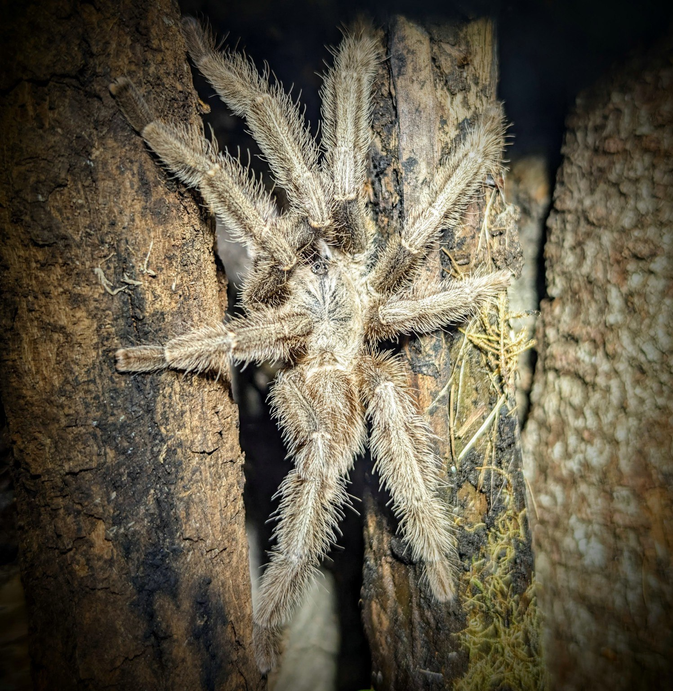
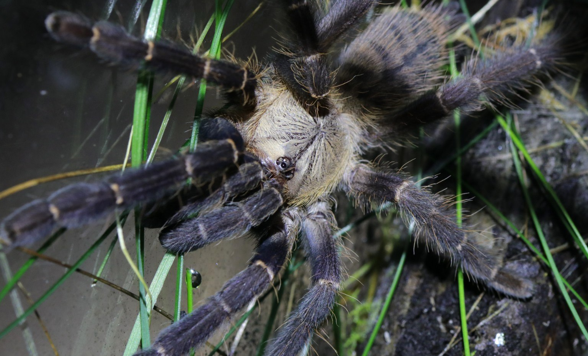
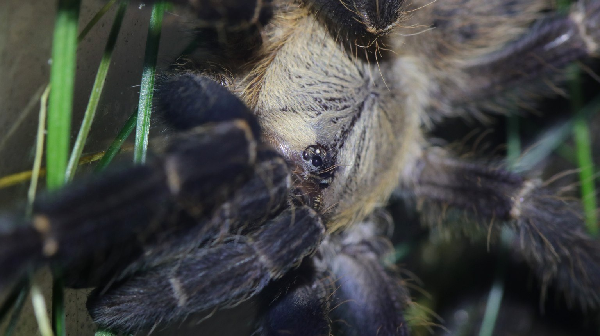

A tree-dwelling tarantula recorded from lowland rainforest and mango plantations in West Sulawesi. Trees provide shelter as well as climbing surfaces. [3]
Species profile · Former collection
Phormingochilus hatihati
Sulawesi tarantula
An arboreal tarantula from West Sulawesi, with a striking change in appearance at maturity. This profile brings together the species’ natural history and photographs of a male I previously kept, before and after his final molt.
Confirmed male · Previously kept · Deceased

Scientific namePhormingochilus hatihati
FamilyTheraphosidae
Native rangeSulawesi, Indonesia
TaxonomyAccepted species · 2024
SexConfirmed male
In the wild
Natural history.
Colour differs between adult males and females. The photographs here follow one male through the change around his final molt. [2]
This male reached maturity in my care and later passed away. His photographs retain a record of his appearance at two stages of life.
Taxonomy and range
The World Spider Catalog accepts Phormingochilus hatihati Müller and colleagues, 2024, in the tarantula family Theraphosidae. The species was formally described from West Sulawesi; the published locality is Tammajarra, Polewali Mandar, Indonesia. A documented locality establishes where a species has been found, rather than mapping every place where it might occur. [1] [2]
The describing museum identifies it as an arboreal species and explains the name hatihati as an Indonesian expression of caution. Its name is a useful detail to remember alongside its island origin and tree-dwelling life. [3]
Tree retreats and activity
The original field notes describe adults sheltering in holes and forks in trees. Young spiders disperse around the tree; some remain near ground level for several molts before moving to another tree as adults. The paper also illustrates a silk-tube entrance on a living trunk. [2]
The habitat account includes secondary lowland rainforest and mango plantations around Tammajarra. These observations make the structure of the habitat—tree surfaces, cavities and sheltered retreats—more informative than a simple label such as “forest spider”. [3]
Feeding ecology
As general background, many mygalomorph spiders hunt from retreats or forage nearby, using vibration and touch to detect prey. Fangs and venom help subdue a meal; digestive fluids break down its tissues, and the spider takes in liquid food. [4]
Feeding observations can record which prey an individual accepts, how it responds and how long it goes between meals. Together, these observations build a history of the animal’s behaviour in care.
Movement and sensory structures
The species description illustrates a stridulatory apparatus beside the mouthparts, together with the arrangement of leg spines. Such small structures help researchers distinguish related tarantulas. [2] Sensory hairs and other receptors also give spiders information through touch and vibration. [5]
The close photograph below brings the eye cluster and carapace into view. It is a chance to look at the small structures carried by an animal whose long legs usually attract attention first.
Colour and the final molt
The description reports sexual dichromatism: females have darker legs and a clearer abdominal pattern, while males are less strongly darkened. [2] Molting replaces the outer cuticle and allows a spider’s body to grow and develop. [5]
In this male’s photographic sequence, dark legs in the earlier portraits give way to a much paler mature appearance. Lighting and camera angle also influence how colour reads in a photograph, so the sequence is best viewed as a record of this individual.
Conservation context
Status, trade & uncertainty.
A species description establishes identity and records its known locality. Conservation assessments and international trade listings require their own evidence.
Assessment not verified
A species-level IUCN assessment has not been verified for this profile. Its conservation category is therefore left unassigned here.
Check current listings
A CITES listing has not been verified here. Use the accepted scientific name when checking the official checklist and any requirements that apply to a transfer.
Locality records matter
The documented habitats include wooded areas and a mango plantation. That is valuable ecological information, but it does not by itself establish population size or a trend in wild abundance.
Keep origin information
Acquisition records, source information and documented breeding history help give a captive animal’s story useful context. Photographs add an individual record of appearance and development.
Taxonomy and ecological sources reviewed 3 November 2026. Conservation and trade categories remain unassigned where a species-level assessment or listing has not been verified.
Life in the collection
Two stages of his life.
This male was part of my former collection. He reached maturity and later passed away. These three photographs show the same spider: the earlier images bring his dark legs and eye cluster into view, while the later portrait shows his pale mature appearance on cork bark.
Before his final molt


After his final molt
Previously kept · Deceased. His photographs remain part of the former collection.
Continue exploring
Related profiles.
Read further
Sources.
- 1. World Spider Catalog — Phormingochilus hatihati Accepted name, authorship and distribution.
- 2. Müller and colleagues (2024) — original species description Integrative Systematics 7(2): 23–39. Morphology, colour differences and field observations · DOI: 10.18476/2024.122121.
- 3. State Museum of Natural History Stuttgart — research announcement Arboreal habitat, locality and the species name.
- 4. Australian Museum — prey capture and feeding General mygalomorph hunting and spider digestion.
- 5. Australian Museum — spider biology Sensory structures and molting.